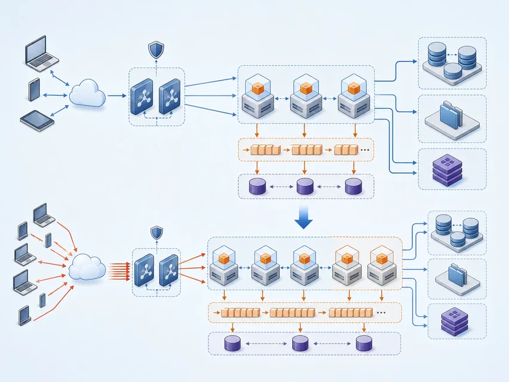

底层资源
服务器或容器运行论坛，网络提供访问入口
数据库保存标题和正文，对象存储保存活动图片
让校园志愿者论坛能发帖、存图并经受一次故障
 VER. 2608.1
Built with impress.js
VER. 2608.1
Built with impress.js
沿一次论坛发帖，判断云应用怎样交付并持续提供服务
学生要能发布活动帖、上传图片，并在一台实例故障时继续访问
服务器或容器运行论坛，网络提供访问入口
数据库保存标题和正文，对象存储保存活动图片
填写活动标题和正文，上传一张图片并点击发布
刷新页面后，自己和另一位学生都能读到同一条帖子
用户能完成发帖，底层资源的组合才成为可用的云应用
每一层都有自己的证据，前一层成功不能替代后一层
实例、数据库和图片桶已经创建
论坛进程启动，并能连接数据库与图片桶
论坛首页可达，发布请求到达应用实例
帖子正文和图片保存成功，刷新后仍能读取
实例显示运行中，还不能证明用户已经能够发帖
| 已观察到的结果 | 能否宣布上线 | 请说明还缺什么 |
|---|---|---|
| 云服务器运行，论坛进程尚未检查 | 可以／不可以／证据不足 | 应用进程、入口和用户任务 |
| 数据库连接成功，尚未写入帖子 | 可以／不可以／证据不足 | 发帖、保存和再次读取 |
| 网页返回 200，页面显示“系统维护” | 可以／不可以／证据不足 | 业务页面与用户任务 |
| 用户发帖并上传图片，刷新后仍能读取 | 可以／不可以／证据不足 | 故障变化与回收状态 |
宣布上线前，至少要亲自完成一次用户任务
同一批访问记录会同时带来规模、时效、格式和价值提取问题
一学期积累数百万条浏览、搜索和报名记录
报名开放后的访问高峰要求及时统计和响应
访问日志、帖子正文、活动图片和报名表并存
单次点击意义有限，聚合后才能判断活动关注度
本节用教材 4V 判断处理压力，15.1 再加入真实性讨论数据能否用于判断
从原始访问记录到活动统计，每一步都要留下可检查的输入和输出
若刷新一次页面产生三条重复日志，直接计数会夸大活动热度
| 已观察到的数据 | 选择处理动作 | 说明输出证据 |
|---|---|---|
| 一次页面刷新产生三条相同请求 | 去重／换图表／扩容 | 去重规则与记录数变化 |
| 一部分时间是 UTC，一部分是北京时间 | 统一时区／删图片／加实例 | 统一后的时间字段与口径 |
| 每日新增日志约 5 GB，单机空间将满 | 分区存储／改标题／人工浏览 | 容量、分区与读取结果 |
| 图表只有访问量，没有活动名称 | 补充关联／删除数据／缩容 | 活动名称与指标一一对应 |
平台根据活动信息生成草稿和配图，但不能替人确认能否发布
输入：活动主题、时间、地点、受众和图片要求
输出：标题、正文和配图候选 → 人工核验 → 论坛发布
活动信息和论坛写作要求构成业务上下文
模型根据输入生成文案或图片候选
支持推理，并通过接口把能力交给论坛
编辑者在发布页面查看、修改或拒绝候选
生成完成只说明候选已经返回，不说明内容可以发布
活动时间、地点、版权和隐私都必须回到原始材料核对
根据输入生成活动标题、正文和配图候选
保存输入、候选与修改记录，便于比较
核对时间地点、图片版权、人物肖像和校方标识
决定修改、拒绝还是发布，并承担发布责任
平台可以生成，发布者必须核验并承担责任
| 候选结果 | 选择：发布／修改／拒绝 | 说明核验依据 |
|---|---|---|
| 草稿写“周六 9:00”，原通知是 10:00 | 发布／修改／拒绝 | 原通知中的活动时间 |
| 配图含校徽和无法确认授权的陌生人照片 | 发布／修改／拒绝 | 标识规范、版权与肖像授权 |
| 文案称“报名人数翻倍”，没有历史数据 | 发布／修改／拒绝 | 统计记录与比较口径 |
| 草稿已核对时间地点，图片来自授权素材库 | 发布／修改／拒绝 | 核验记录与发布范围 |
浏览器先经过论坛入口和应用，再分别保存正文与图片
请求路径：浏览器 → 论坛入口 → 应用实例 数据分支：帖子正文 → 数据库；活动图片 → 对象存储
接收论坛域名请求并转发给健康实例
校验用户与表单，协调正文和图片的保存
保存用户、活动标题、正文和发布时间
保存活动图片，并按权限返回对象地址
论坛是否发帖成功，要同时检查正文记录和图片对象

应用实例可以复制，用户状态不能只放在单个实例
路由、校验和页面生成可以部署到多个实例
账户、活动帖正文和发布时间放在数据库中统一管理
活动图片放在对象存储并通过权限访问
镜像说明启动环境；不等于数据备份与恢复
副本说明运行实例；不等于数据副本
高可用应用必须把计算副本与数据保护分开设计
| 现象 | 优先检查对象 | 需要的证据 |
|---|---|---|
| 浏览器提示“找不到论坛域名” | 域名解析与入口 | 解析结果、网络连通和入口日志 |
| 页面打开，但用户被判定为不存在 | 应用与用户数据库 | 认证查询、连接状态和用户记录 |
| 正文可读，图片请求返回 403 | 对象存储与访问权限 | 对象地址、权限策略和请求日志 |
| 实例 A 发帖报错，实例 B 正常 | 实例 A 与后端池 | 两台实例日志、依赖和版本差异 |
先沿请求路径缩小范围，再用日志和数据状态确认故障
三者常一起出现，但分别回答服务能否继续、流量发给谁和实例需要多少
| 机制 | 主要问题 | 关键动作 |
|---|---|---|
| 高可用 | 一台论坛实例故障后能否继续发帖 | 冗余、健康检查、故障转移 |
| 负载均衡 | 访问请求怎样分给多个论坛实例 | 监听、分发、剔除不健康后端 |
| 弹性伸缩 | 报名高峰需要多少论坛实例 | 按策略扩容、缩容和设置边界 |
负载均衡分发请求，弹性伸缩改变实例数量，高可用应对组件故障
先观察请求、健康状态和实例数量，再判断是哪种机制生效
负载均衡把报名请求分给多个健康实例
伸缩策略按条件增加或减少实例
健康检查把故障的论坛实例移出后端池
流量可转向健康实例；平台按策略决定是否补充实例
若登录会话只存在单个实例，流量切换后用户仍可能掉线
| 观察结果 | 主要机制或问题 | 判断依据 |
|---|---|---|
| 请求依次到达实例 A、B、C | 负载均衡／伸缩／数据设计 | 请求被分给多个健康后端 |
| A 健康检查失败，后续请求只到 B、C | 高可用与负载均衡 | A 被剔除，健康实例继续服务 |
| CPU 连续 5 分钟超过 70%，实例从 2 台增至 4 台 | 弹性伸缩 | 负载达到阈值且实例数变化 |
| 请求从 A 切到 B 后登录状态丢失 | 会话状态设计 | 会话没有放在共享状态中 |
验收不是看完控制台绿灯，而是亲自完成任务并观察一次变化
验收步骤必须写清输入、动作、预期结果和证据
让同一条活动帖贯穿部署、故障切换和清理
01
02
03
04
05
06准备论坛版本、测试用户与活动素材
→ 发布两个应用实例
→ 正文写入数据库，图片写入对象存储
→ 通过论坛入口发帖并再次读取
→ 停止实例 A，确认流量转到实例 B
→ 保存证据并回收测试资源入口、实例、数据库和图片桶是否连接
A、B 的健康检查、流量和日志是否变化
帖子正文和图片在故障前后是否都能读取
实例、监听器、测试记录、图片对象和权限
同一条帖子把结构、运行和用户任务证据连在一起
| 观察结果 | 可通过的验收项 | 仍不能证明什么 |
|---|---|---|
| 两台论坛实例均显示运行 | 实例已启动 | 发帖、读图与故障切换 |
| A、B 的健康检查均通过 | 两台后端可接收请求 | 用户任务与数据结果正确 |
| 停止 A 后，B 仍能打开原帖子 | 故障切换与帖子读取 | 扩容策略和完整回收 |
| 实例和监听器已删除 | 部分计算与入口已回收 | 测试记录、图片对象和权限已清理 |
每项观察只通过对应验收，不能替代其他结果
沿一条活动帖，判断论坛是否真正完成交付